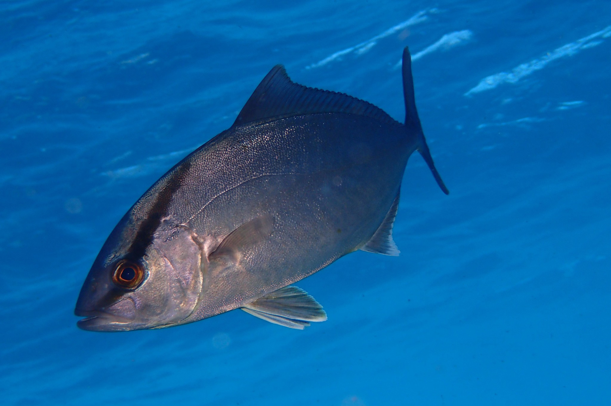

Seriola dumerili (Μαγιάτικο)

Το μαγιάτικο (Seriola dumerili, greater amberjack) είναι μεγάλο, γρήγορο αρπακτικό ψάρι της οικογένειας Carangidae, με μεγάλη σημασία τόσο για την αλιεία όσο και για την ιχθυοκαλλιέργεια στη Μεσόγειο
Μορφολογία
Το σώμα του μαγιάτικου είναι επιμηκές, τορπιλοειδές και ελαφρά πλευρικά συμπιεσμένο, με σχετικά μεγάλο κεφάλι, ισχυρή ουρά και χαρακτηριστική λωρίδα κατά μήκος του σώματος από το ρύγχος προς την ουρά. Τα ενήλικα φτάνουν συνήθως 80–150 cm, αλλά μπορούν να ξεπεράσουν τα 180 cm, με βάρος άνω των 40 kg, ενώ τα νεαρά έχουν πιο λεπτό σώμα και αλλάζουν μορφολογία όσο μεγαλώνουν
Πού το συναντάμε
Το είδος απαντάται σε εύκρατα και υποτροπικά νερά σε Ατλαντικό, Μεσόγειο και άλλα θαλάσσια συστήματα, όπου τα ενήλικα ζουν κυρίως σε βαθιούς εξωτερικούς υφάλους και βραχώδεις πλαγιές, συχνά πάνω από την θερμοκλίνη. Μπορεί να πλησιάζει παράκτιους κόλπους και να κινηθεί από περίπου 20 m μέχρι πάνω από 200 m βάθος, προτιμώντας καλά οξυγονωμένα, σχετικά θερμά νερά περίπου 15–27 °C.
Διατροφή
Τα ενήλικα μαγιάτικα είναι ευκαιριακοί θηρευτές που τρέφονται κυρίως με άλλα ψάρια (μικρά πελαγικά και βενθοπελαγικά είδη) αλλά και με κεφαλόποδα και καρκινοειδή. Τα μικρά άτομα (μέχρι περίπου 15–20 cm) τρέφονται περισσότερο με ζωοπλαγκτόν και μικρά κρουστάσια, ενώ στη συνέχεια αλλάζουν διατροφή καθώς μετακινούνται σε πιο βενθοπελαγικές ζώνες.
Συνθήκες εκτροφής
Στη Μεσόγειο, το μαγιάτικο έχει αναγνωριστεί ως πολλά υποσχόμενο είδος εκτροφής λόγω γρήγορης ανάπτυξης και υψηλής εμπορικής αξίας, εκτρεφόμενο σε θαλάσσια κλωβοειδή συστήματα και σε μονάδες ανακυκλοφορίας. Βέλτιστες συνθήκες ανάπτυξης περιλαμβάνουν θερμοκρασίες περίπου 18–24 °C, καλή οξυγόνωση, ισχυρή αλλά όχι υπερβολική ροή νερού και ποιοτική, πλούσια σε πρωτεΐνη τροφή, ενώ μελέτες δείχνουν ότι θερμικά κύματα άνω του βέλτιστου εύρους επηρεάζουν αρνητικά την υγεία και την αύξηση των ψαριών.